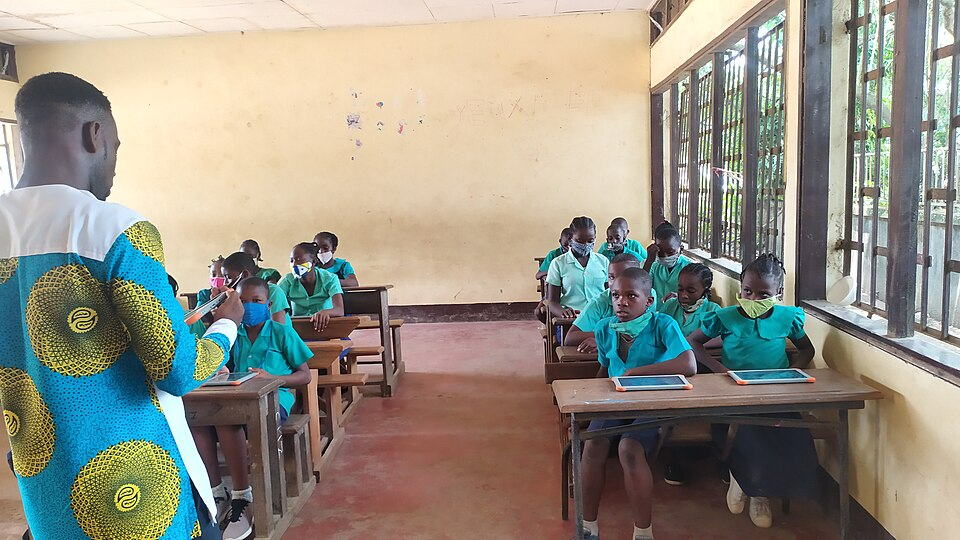
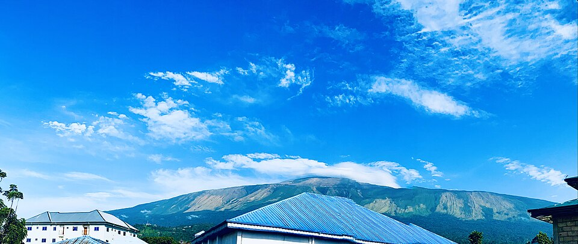

Photo credits
The photographs on this website were taken in Cameroon by independent photographers and shared under free licenses. Thank you to each of them.
Images are from Wikimedia Commons. Each is used under the license shown, which asks us to name the photographer and link to the license. Photos may have been resized for the website.
| Photo | Description | Photographer | License | Source |
|---|---|---|---|---|
 | A classroom in Cameroon Pupils in green school uniforms at their desks while a teacher in a bright African print shirt speaks to the class | Minette Lontsie | CC BY-SA 4.0 | Wikimedia Commons |
 | Learning together Pupils in a Cameroonian classroom working together on tablets with their teacher | Minette Lontsie | CC BY-SA 4.0 | Wikimedia Commons |
 | Mount Cameroon Mount Cameroon rising above rooftops under a bright blue sky | Adesolive | CC BY-SA 4.0 | Wikimedia Commons |
 | Two smiling children Two smiling children standing close together outdoors | 3ch310n 123 | CC BY-SA 4.0 | Wikimedia Commons |
 | Children at a village hand pump Two children collecting water from a hand pump on a sunny morning | Emerymakini | CC BY 4.0 | Wikimedia Commons |
 | Children playing in a village Children playing with a rope on a sandy village street in northern Cameroon | Roukia Ita Djibrine | CC BY-SA 4.0 | Wikimedia Commons |
 | Cooking for the village A woman in a bright printed dress stirring a large pot over a wood fire | Sid Mbog | CC BY-SA 4.0 | Wikimedia Commons |
| A market in Foumban Colourful umbrellas shading market stalls in Foumban | Elin | CC BY 2.0 | Wikimedia Commons |